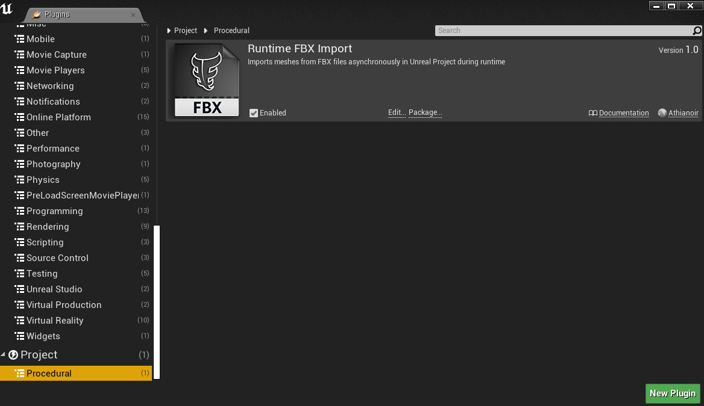
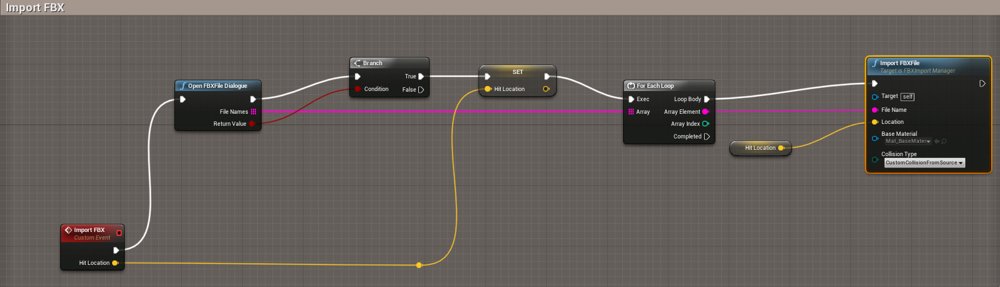
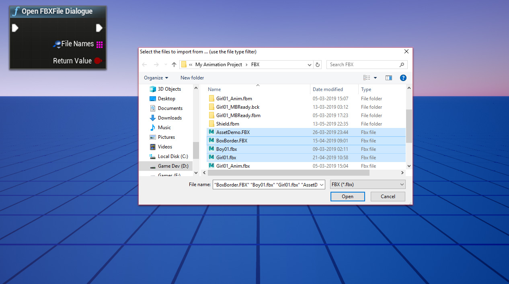
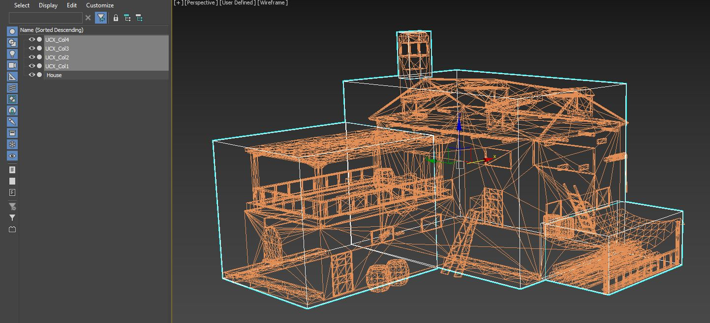
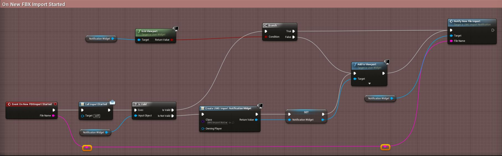
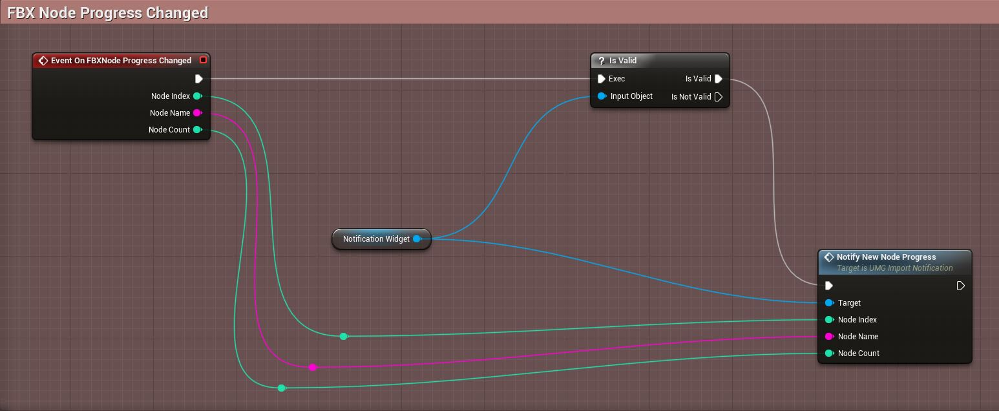
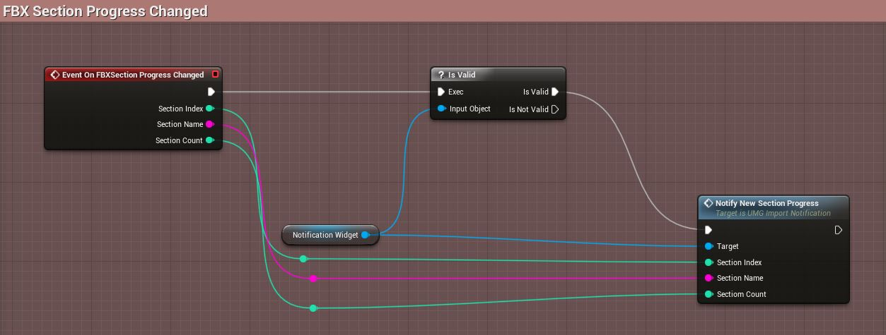
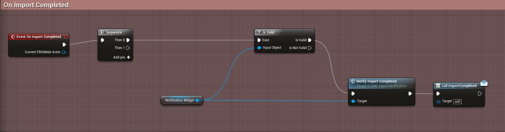
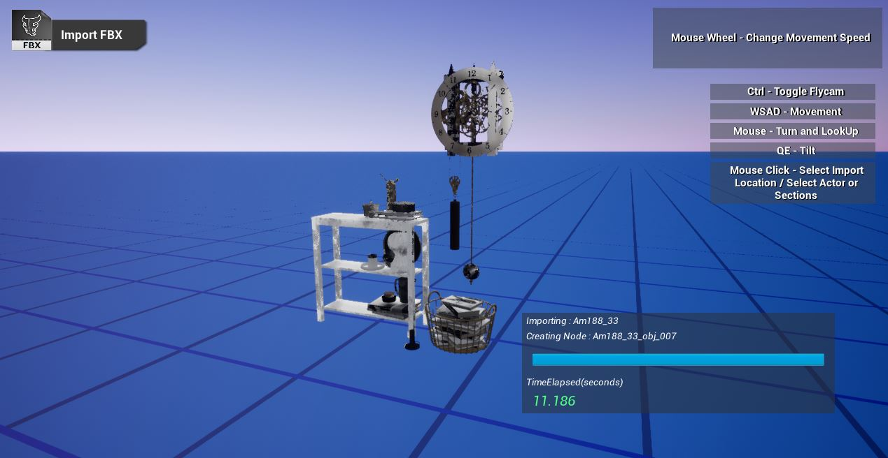

This documentation covers details of how to integrate this plugin in your own project. By the end of this documentation you should be able to have a better understanding of importing custom FBX meshes from hard drive during gameplay in your unreal project, and triggering notifications or perform other tasks while the import is in progress, as the process is asynchronous. You will also have a clear understanding of updating material properties for individual sections.
Once you have installed the plugin from the launcher, ensure that the plugin is enabled by visiting the plugin window and browsing over to the RuntimeFBXImport plugin.
The FBXImportManager Actor class is responsible for handling the import of FBX files and generatation of Procedural Mesh Components from the imported FBX scenes. A child Blueprint derived from the FBXImportManager, found in the Blueprints folder of the plugin Content directory, has been created as an example and can be used to quickly start implementing this plugin in your projects. You must place an instance of the FBXImportManager in your level, before you can begin importing your files.
The import process is a multi threaded or asynchronous operation. The FBX scene from the given file path is read as groups of Nodes, each node consisting of FBX mesh with several unique material sections. Each such section is generated as a Procedural Mesh Component that is then displayed in the Unreal Scene. Each section is a child of a particular node, as read from the original source file. So each Procedural Mesh Component has a NodeID as well as a SectionID.
Since the process can take a while to fully load the entire FBX scene, depending on the complexity of the given FBX scene, we have custom events that get triggered during the import, and can be used to display custom notifications, or perform other tasks relevant to the Node being imported currently.
The function ImportFBXFile begins the asynchronous operation of a single FBX file, with the full filepath and the world location for the import, as input parameters. This function resides inside the FBXImportManager class.
| Input Parameter | Description |
|---|---|
| FileName | FBX file name to be included, consisting of the name and extension of the file as well as full filepath. |
| Location | World Location where the meshes read from the given FBX file is generated procedurally. |
| Base Material | Default material to be applied on the generated procedural mesh. |
| Collision Type | If the generated mesh has no collision, or custom collision as read from the source file. |
When the function ImportFBXFile is called, we specify string FileName, which contains the fullpath, like "D:\Projects\FBX\Girl01.fbx". This can be constructed from the list of Blueprint exposed Path functions relative to the Project Directory, as shown below.
However, if you want to manually choose one or multiple FBX files, you can call the function OpenFBXFileDialogue. This function brings the Windows default OpenFile Dialogue, with the Filetypes restricted to only FBX.
| Output Parameter | Description |
|---|---|
| FileNames | The full FileNames (Name, extension and path information) of the files selected from the OpenFile Dialogue. |
| Return Value | True if FileNames are succesfully selected, False if the File Selection is cancelled. |
An FBX mesh usually contains materials applied to them, divided into material sections with unique section indices. Each material section comprises of Materials developed in external 3d application, but contains common data like diffuse, opacity, normal, emissive and specular textures, diffuse color, etc. When an FBX mesh is imported, it also reads and imports the color and texture values from the corresponding source file. This values are set and applied in parameterized materials that we can add in our Procedural Mesh Component which are generated from the unique material sections of a given FBX mesh. So when we are calling the function ImportFBXFile, we can specify a default parameterized material that are going to auto apply in the generated mesh sections, with the textures and color values set, depending on the parameterization of the input material. We also have the option to update a particular mesh section with a specific material.
When the FBX file is being imported via the ImportFBXFile function, it can be chosen to either have no collisions, or collisions read from the source file, via the CollisionType input parameter.
| Collision Type | Description |
|---|---|
| NoCollision | The currently Imported Meshes will not have any collisions applied on them. |
| MeshCollisionFromSource | Collision is only applied to the Procedural Mesh Components generated from the nodes having node name with prefix UCX_. |
| CustomCollisionFromSource | Only Collision data is generated from the nodes having node name with prefix UCX_ , and seperate mesh is not rendered. |
To create optimized collisions for your Procedural Mesh Components generated from the FBX Meshes, it is important to have simplified collision geometries. Of course we can have collisions derived from the imported Meshes itself, but for high poly meshes, it is going to be extremely performance heavy and not a recommended way to create collisions. So creating custom collision geometries within your 3d Modelling applications and exporting it with the render mesh is required for this plugin to create collision data for the generated Procedural Mesh Components.
Collision meshes are identified by this plugin based on their names. The collision naming syntax should be UCX_[RenderMeshName].
While importing, if you choose to have collision type as MeshCollisionFromSource, it means the geometries matching the naming pattern UCX_[RenderMeshName] will be imported as both render mesh and collision data. But choosing the collision type as CustomCollisionFromSource would rather implies that the geometries matching the naming pattern UCX_[RenderMeshName] will be imported as collision data only, and will not be rendered seperately.
Once the import process of a given FBX file is started, few events notifying the Import Manager of the import progress get triggered. These events need to be defined in the Import Manager Blueprint, and can be used to display custom notifications on screen, or perform other tasks, for example, displaying a dynamic Loading screen which disappears after all the FBX meshes are completely imported and corresponding mesh components have been generated in the current level.
The event On New FBX Import Started is fired when a new FBX Import process has started.
The event On FBX Node Progress Changed is fired when a new FBX Node has been Imported, with each individual sections of the Node has been generated into Procedural Mesh Components.
The event On FBX Section Progress Changed is fired when a new FBX Section is imported and generated into a Procedural Mesh Component.
The event On Import Completed is fired when athe current FBX Import process is completed.
These events can be very useful to display custom Notifications via UMG Widgets.
To read the textures from the imported FBX files and apply at respective sections of the Procedural Mesh Component, it is important to create parameterized materials, following a specific naming convention for the paramters, so that while the respective FBX section is converted into a Procedural Mesh Component, a dynamic material is created and corresponding textures can be set in the property values that match the given naming convention.